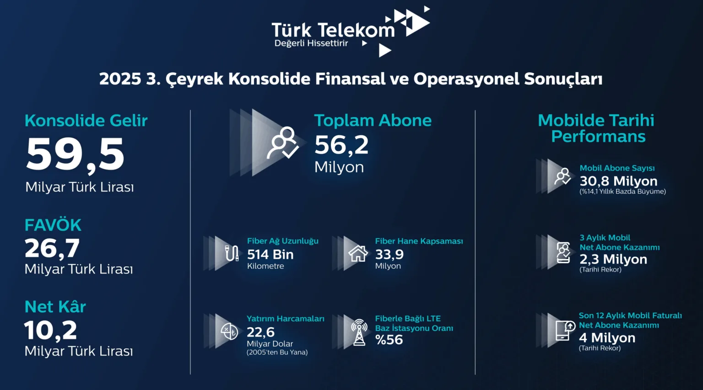

Türk Telekom mobilde rekor kırdı, 5G eşiğinde tarihî çeyrek
Türk Telekom, 2025’in üçüncü çeyreğinde mobildeki ivmesini katlayıp finansalları yukarı taşıdı. Şirket, sabit hat imtiyazının yenilenmesi ve 5G ihalesiyle kritik eşiği geçti. Ayrıca güçlü fiber omurga sayesinde yeni döneme net bir vizyonla giriyor.
Türk Telekom finanslarda vites yükseltti
Gelirler geçen yılın aynı dönemine göre %10,7 artarak 59,5 milyar TL’ye çıktı. FAVÖK %21,6 yükselişle 26,7 milyar TL oldu ve marj %44,9’a yerleşti. Net kâr 10,2 milyar TL’ye ulaştı. Buna paralel, çeyrekte 21,7 milyar TL yatırım açıklandı. Bu tablo, fiyat disiplini ve ölçek ekonomisinin birlikte çalıştığını gösteriyor. Dahası, ürün portföyündeki denge büyümeyi destekliyor.
Öne çıkan üç rakam
- 59,5 milyar TL konsolide gelir
- %44,9 FAVÖK marjı
- 21,7 milyar TL yatırım
Mobilde rekor net kazanım ve lider MNT
Şirket, çeyrekte 2,3 milyon net kazanımla mobilde tarihinin en iyi performansını yazdı. Toplam mobil abone sayısı 30,8 milyona ulaştı. Ayrıca MNT pazarında liderlik yeniden alındı. Son on iki ayda 4 milyonu aşan faturalı net artış kayda geçti. Böylece ölçek, şebeke verimliliğine doğrudan katkı veriyor. Üstelik müşteri memnuniyetine odaklı yaklaşım, churn baskısını da hafifletiyor.
Ebubekir Şahin/Türk Telekom CEO
Türk Telekom CEO’su Ebubekir Şahin, “Geride bıraktığımız dönem hem Türk Telekom hem de ülkemizin dijital geleceğinin inşası açısından yeni bir çağın eşiğini temsil ediyor. Öncelikle sabit hat hizmetlerine ilişkin imtiyaz sözleşmemizi ülkemizin menfaatleri çerçevesinde yeniledik. Bu kapsamda Türkiye’nin dijital omurgasını güçlendiren stratejik çalışmalarımızı sürdüreceğiz ve ekonomiye 20 milyar dolarlık doğrudan katkı sağlayacağız. Ardından 16 Ekim’de gerçekleştirilen 5G ihalesinden abone başına en yüksek bant genişliği sunmamızı sağlayan frekansları alarak istediğimiz sonuçlarla ayrıldık. 5G frekans ihalesinde elde ettiğimiz güçlü pozisyon ise geleceğin teknolojilerine yön verecek bir kapasite artışını beraberinde getirdi” dedi.
Türk Telekom fiber omurgayla 5G’yi hızlandırıyor
Toplam abone sayısı 56,2 milyona yükseldi. Fiber ağ uzunluğu 514 bin kilometreye çıktı; hane kapsaması 33,9 milyona ulaştı. LTE baz istasyonlarının %56’sı fiberle bağlı. Bu oran, 5G geçişinde kapasiteyi artıracak. Ayrıca sabit genişbantta fiber abonelerin payı %92’ye geldi. Böylece sabit ve mobil şebeke arasında anlamlı bir sinerji kuruluyor. Sonuçta kapsama ve hız birlikte iyileşiyor.
Eylül–Ekim döneminde 1,8 milyar dolar tutarında kapsamlı finansman programı tamamlandı. Şirket, 7 yıl vadeli 600 milyon dolarlık yeşil eurobond ihraç etti. Talep üç katı aştı ve yeşil finansman portföyü 1,1 milyar dolara çıktı. Ayrıca üçü ECA garantili dört uzun vadeli kredi anlaşması ile 600 milyon dolarlık 5 yıl vadeli sukuk gerçekleşti. Böylece 5G ve fiber yatırımlarına uzun soluklu bir finansman hattı kuruldu.
Türk Telekom 2026’ya 5G lansman hedefiyle hazırlanıyor
16 Ekim’deki 5G frekans ihalesinde abone başına en yüksek kapasiteyi sunacak frekanslar alındı. Toplam spektrum portföyü 315 MHz’e genişledi. Plan, Nisan 2026’da ticari lansman. Bu hazırlık, sadece hız artışı değil; düşük gecikmeli servisler, sektör odaklı çözümler ve yeni gelir kanalları demek. Türk Telekom, sağlık, tarım, ulaşım ve spor gibi alanlarda pilotlarla sahayı test ediyor. Kısacası şirket, müşteri deneyimini yükseltirken dijital ekonominin ritmini de hızlandırıyor.
Diğer Kategoriler

Oyun Haberleri